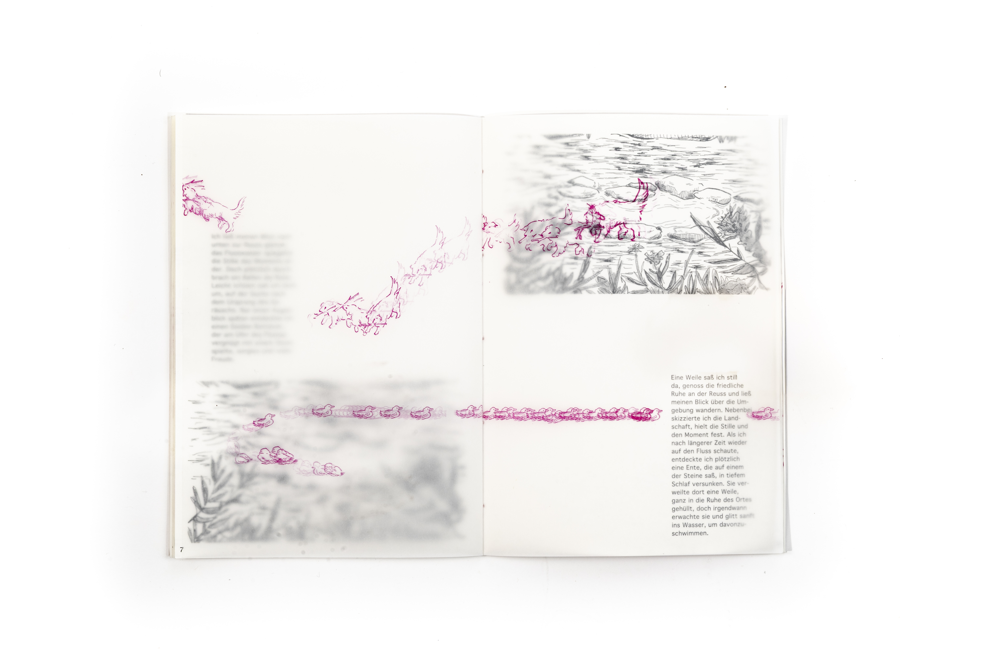
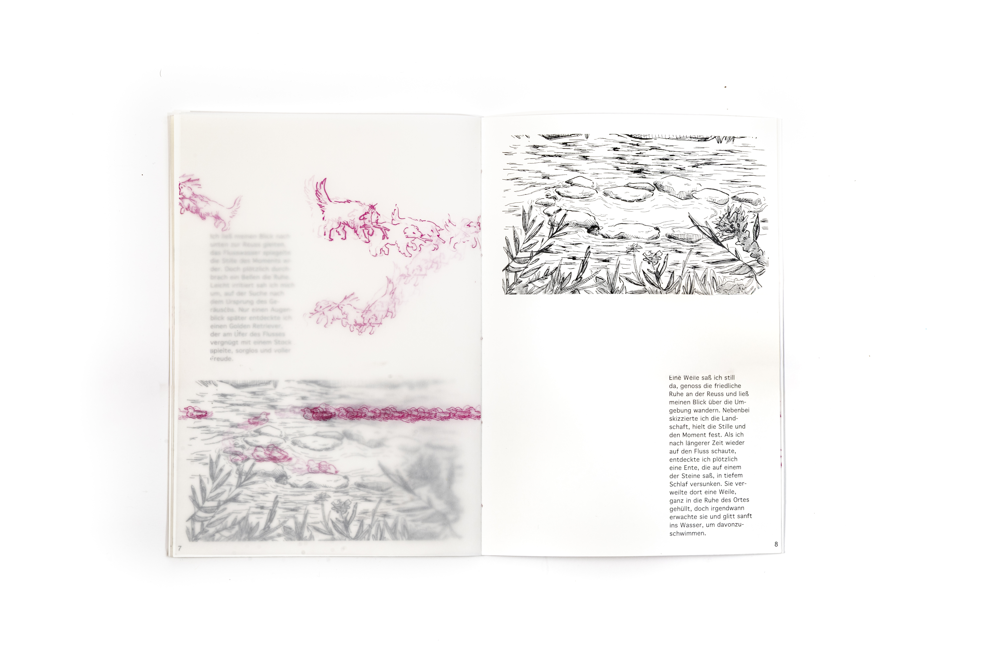
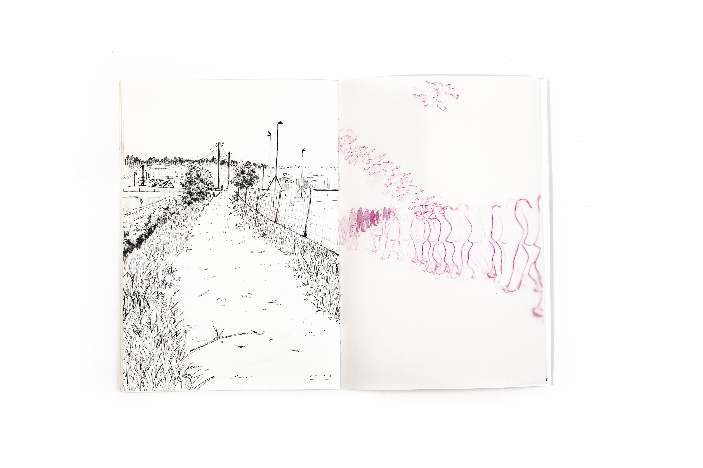
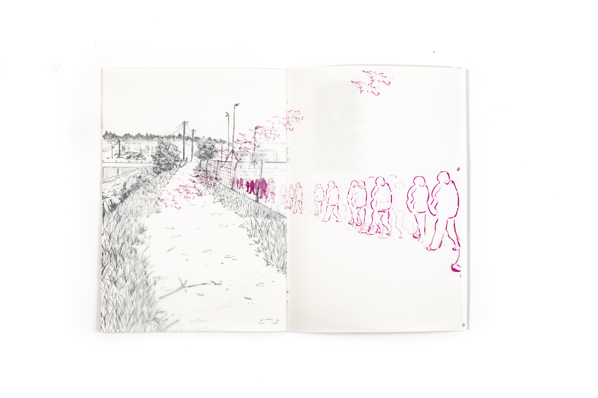
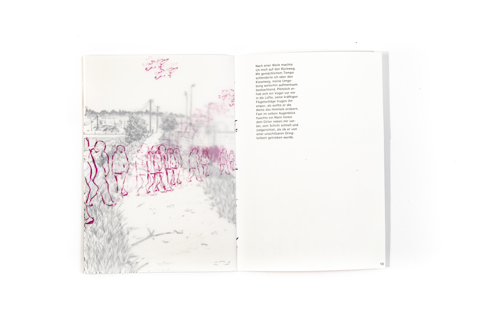
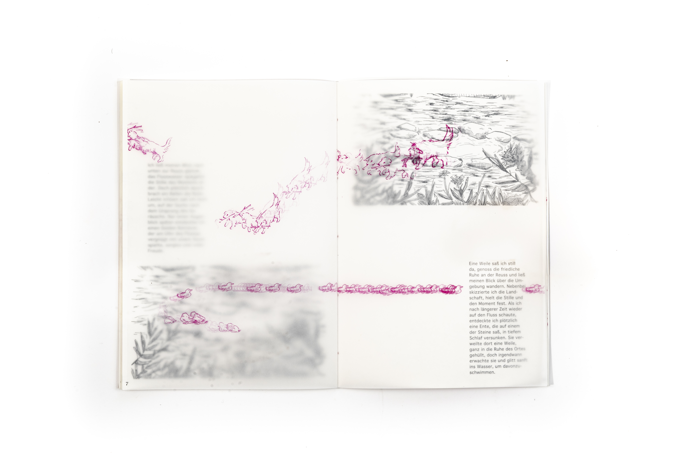
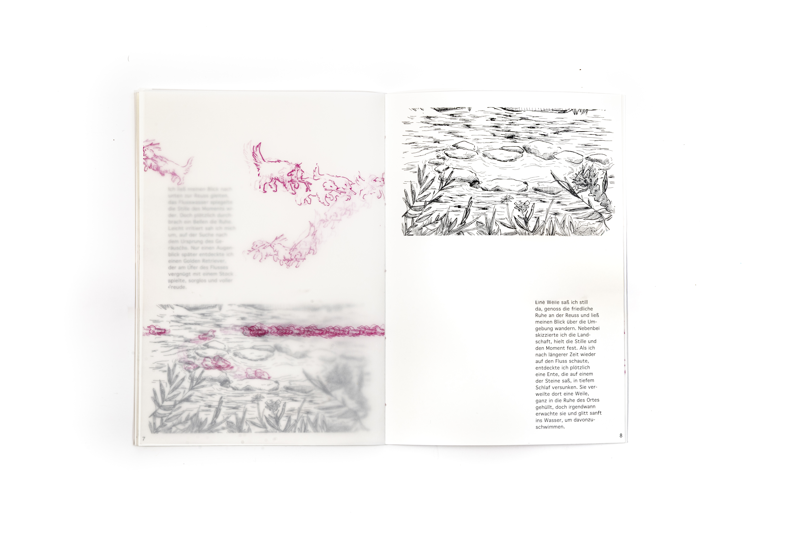
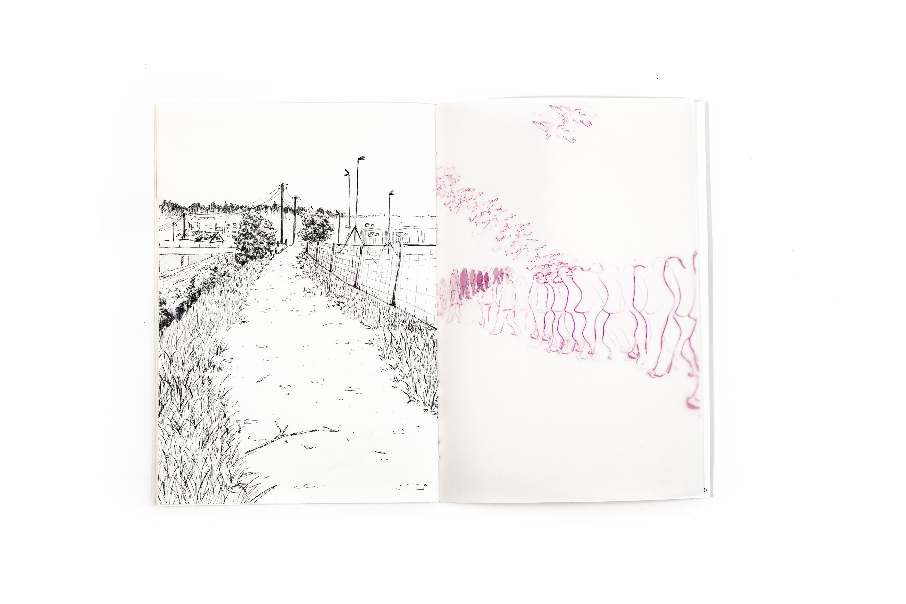
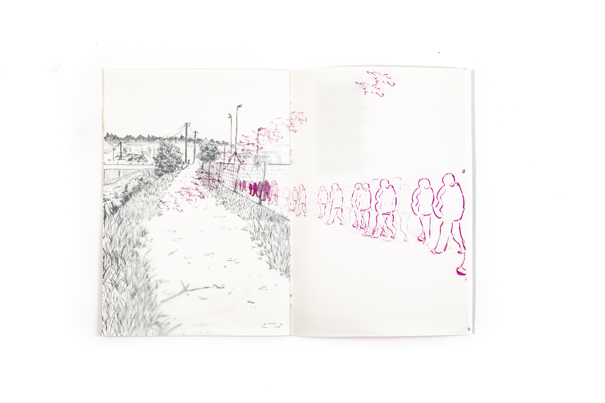
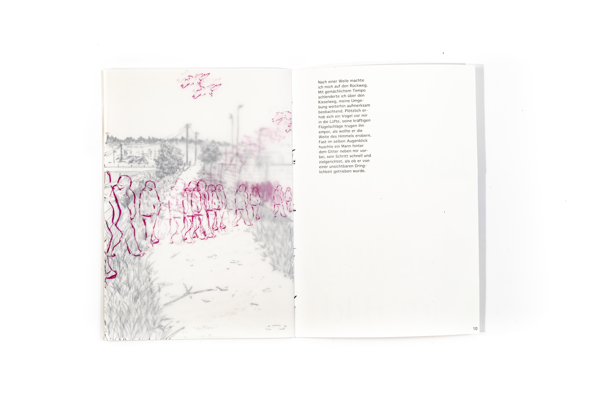

Bewegung im Bild
Verschiedene Ebenen, Farben und Bilder prägen dieses Projekt. Die zentrale Inspiration lag in der Idee, ein Buch zum Leben zu erwecken und zu erforschen, wie man mit unterschiedlichen Ebenen gestalten kann. Ausgangspunkt war eine Beobachtung im Raum Emmenbrücke; Szenen und Momente des Alltags wurden skizziert und anschliessend in bewegte Bildabfolgen übersetzt. Aus einfachen Zeichnungen entstanden dynamische Sequenzen, die den Rhythmus der Bewegungen aufnehmen und visuell weiterführen. Besonders spannend war die Kombination von verschiedenen Materialien wie Transparentpapier und Tatami-Papier, die ein Zusammenspiel aus Überlagerung und Struktur erzeugen. So entstehen visuelle Ebenen, die sich je nach Licht, Perspektive und Umblättern verändern und das Buch zu einem lebendigen und interaktiven Objekt machen.